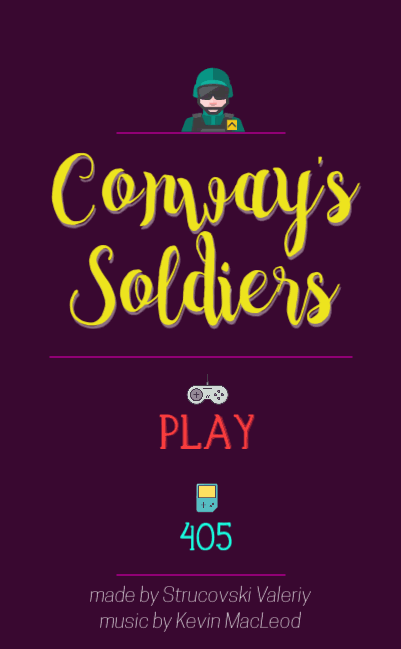

Sepjani's Games
personal projects demopage
contact me
sepjani.games@gmail.com
-
Conway's Soldiers
Conway's Soldiers or the checker-jumping problem is a one-person mathematical game devised and analyzed by mathematician John Horton Conway in 1961. The goal of the game is to move your soldiers up as far as you can. Soldiers can only move by jumping over another soldier into an empty square.
Unity
WebGL
Puzzle
Solitaire
Available on Browser (old version) Android -
Clash in Space
Increase crew of your ship and repair the beacon tower. xplore this part of universe and save the world from strange creatures which comes through the portal!
Y8 Competition
Unity
WebGL
Strategy
Available on Android Browser -
Far Fish

Mobile runner game with ending. Stay in the air and fishing as many fishes as you can. If you can hold out and not starve - you can execute main mission - do a world trip. Controls are easy - just tap the left part of the screen to fly up and right to catch fishes. Don't fall into the sea!
Hackathon
Unity
Runner
Available on Android -
Flying Zoo
Flying Zoo is arcade strategy game. More correctly it is meditative arcade strategy game. You don't have to worry about selecting tens or hundreds units, but you can focus on controlling sleeping cycle of birds to make more and more ingame people happy.
CoronaSDK
First Game
Available on Android